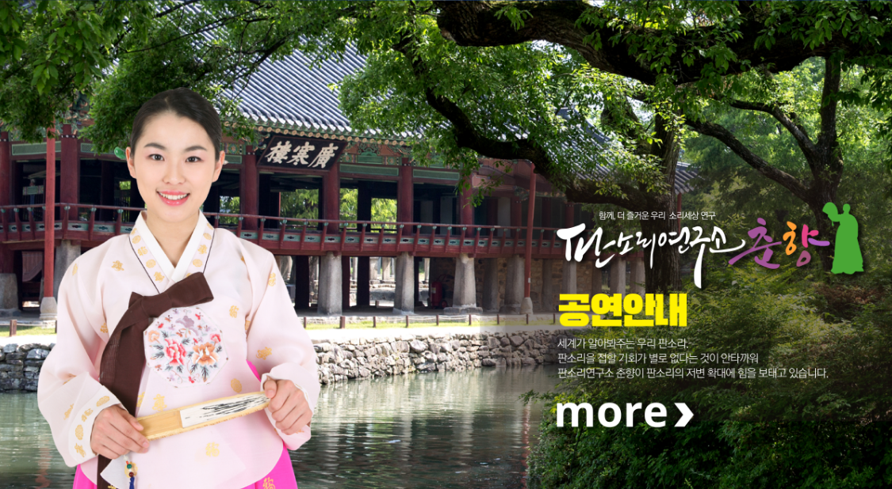
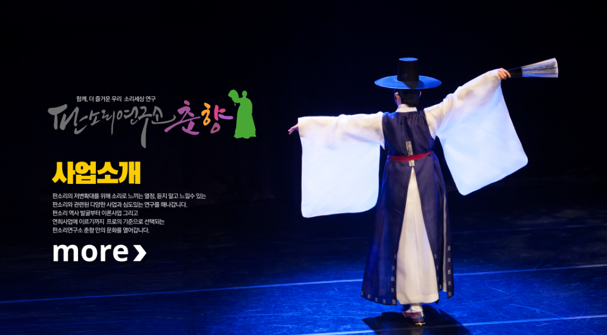
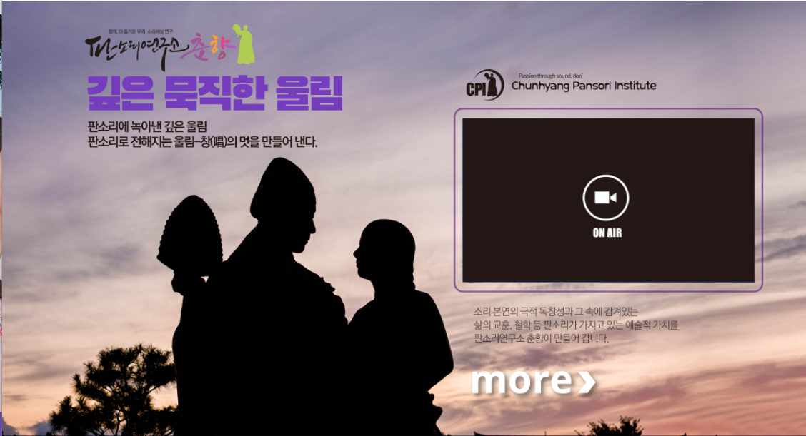

01 · HISTORY
판소리 역사발굴
판소리의 역사와 유래를 조사·발굴하고 소중한 기록을 보존합니다.
판소리에 녹아든 삶의 지혜와 예술적 가치를
오늘의 무대에서 내일의 문화유산으로 이어갑니다.
판소리연구소 춘향은 우리 소리의 역사와 유래를 탐구하고, 전통의 가치에 새로운 생명력을 더합니다. 깊은 울림이 다음 세대의 희망이 될 수 있도록 연구하고 기록하며 무대를 만들어갑니다.

“꽃처럼 활짝 핀 창(唱)의 멋, 판소리의 깊은 울림.”
PASSION THROUGH SOUND판소리의 뿌리를 찾고, 새로운 예술의 가능성을 열어갑니다.
판소리의 역사와 유래를 조사·발굴하고 소중한 기록을 보존합니다.
판소리의 예술적 특성을 연구하고 문화적 가치를 확장합니다.
전통과 현대가 공존하는 공연과 다양한 문화예술 활동을 기획합니다.
지역과 국악단체가 협력하는 지속가능한 예술 교류를 추진합니다.
춘향의 무대와 문화예술 활동을 함께 만나보세요.


공지사항부터 언론보도, 소식지와 자료실까지 한곳에서 만나보세요.
※ 게시판은 Cloudflare D1 연결 전까지 안내 화면입니다. 기존 게시글은 이전 완료 후 표시됩니다.
후원의 손길은 판소리 역사 발굴, 공연, 연구, 다음 세대를 위한 문화예술 활동의 든든한 기반이 됩니다.
예금주 : (사)판소리연구소춘향
기존 자료에 기재된 계좌 정보입니다. 실제 후원 전 최신 정보를 확인해 주세요.